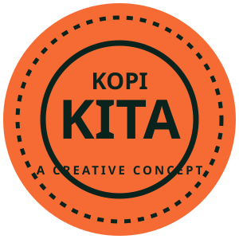

A little
more kita.

A kopitiam turns a coffee break into a reason to sit a little longer.
In Malay, kita means “us”. KopiKita imagines a place for the familiar and the unexpected: local kopi beside espresso, warm bakes beside something cold.
This is an original fictional café concept by Ismail Studio. The café is imagined. The care in every detail is real.
Find your kind of kopi ↓